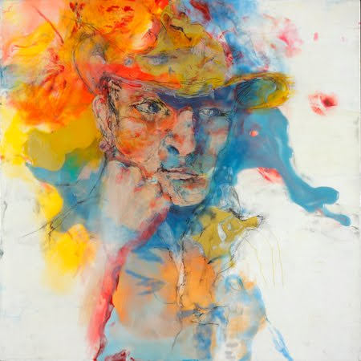
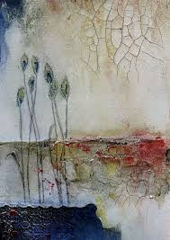

Art Description:
These colors of Purple and yellow just blend in so perfectly to give us the best painting of a beautiful part of a flower.
This painting leaves us to want to see more of this flower, that is so much beyond mesmerizing.

Art Description:
The background perspective and the scenic image are absolutely mesmerizing. The way the primary colors are used,
is just amazing and really wonderfully done, with precision and accuracy.

Art Description:
This evocative portrait reveals the deeply intertwined personal and artistic lives of the world we are living in right now. How beautifully
is it shown that how we are all broken inside.